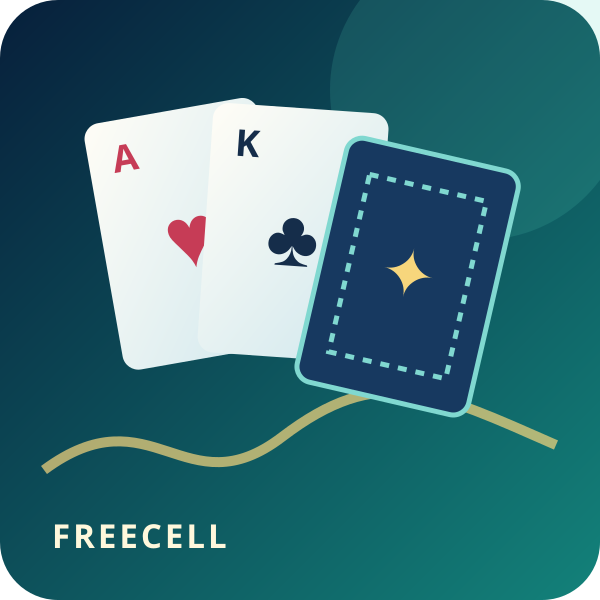

FreeCell Solitaire
Build four suit foundations from Ace to King using eight open columns and four temporary cells.

Build four suit foundations from Ace to King using eight open columns and four temporary cells.
Every card reaches its suit foundation.
Tap or drag cards on phone and desktop.
Hint and unlimited Undo keep planning clear.
All 52 cards are face up. Build descending alternating-color sequences in eight tableau columns, use four single-card Free Cells as temporary space, and send each suit from Ace to King to its Foundation.
Select a card or a legal sequence, then tap a destination or drag it there. A longer sequence can move only when the open Free Cells and empty columns provide enough working space.
Open an empty column early, keep Aces and low cards moving to Foundation, and use Hint to inspect a legal option without changing the table.